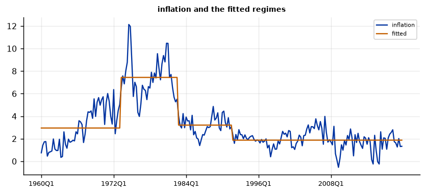

Run this model on your own data in Open Econometric Systems →
Step 1The question and the model
How many times did the parameters shift, and when? With \(m\) breaks at dates \(T_1 < \dots < T_m\) the model is
where \(x_t\) always contains a constant, so the simplest case is a model of shifting means. For each \(m\) the break dates are the least-squares minimisers over all partitions in which every regime has at least a fraction \(\varepsilon\) of the sample (the trimming). A dynamic-programming algorithm finds them exactly. The number of breaks is chosen by the \(\sup F(\ell)\) tests of no break against \(\ell\) breaks, the UDmax test against an unknown number, the sequential tests of \(\ell\) against \(\ell+1\) breaks, or an information criterion.
Three checks before you trust break dates
- Are the errors close to uncorrelated? The tests assume serially uncorrelated errors. For a persistent series, shifts in the mean can be mistaken for persistence, and the reverse. Re-estimate with a lagged dependent variable among the regressors.
- Does the number of breaks depend on the rule? BIC, LWZ and the sequential test can disagree. Report all of them, and show that the dates you discuss are stable.
- Are the break dates precise? A small shift gives a wide confidence interval for the date. Say so, and do not present a date as exact when its interval spans years.
How to write it: the model
We test for structural change in the mean of U.S. inflation with the procedure of Bai and Perron (1998, 2003). The model allows the mean to shift at up to five unknown dates, with each regime containing at least 15% of the 240 quarterly observations (36 quarters). Break dates are the global least-squares minimisers, and the number of breaks is chosen by the BIC and checked against the sequential supF(\(\ell+1\,|\,\ell\)) test at the 5% level. Critical values are asymptotic and were simulated for this engine. Confidence intervals for the dates follow Bai (1997).
Step 2Load the data and look at the series
import numpy as np
import pandas as pd
import oes_engine as oes # pip install -e open-econometric-systems/oes-engine
from statsmodels.tsa.stattools import adfuller, kpss
from statsmodels.tsa.stattools import acf
data = open("yield.csv").read()
df = pd.read_csv("yield.csv")
print(df.date.iloc[0], "to", df.date.iloc[-1], "|", len(df), "quarters")
print(df[["inflation", "gdp_growth"]].describe().round(2).loc[["mean", "std", "min", "max"]])
for c in ["inflation", "gdp_growth"]:
print(f"{c:11s} ADF p = {adfuller(df[c], autolag='AIC')[1]:.3f} KPSS p = {kpss(df[c], nlags='auto')[1]:.3f} first autocorrelation = {acf(df[c], nlags=1)[1]:.2f}")1960Q1 to 2019Q4 | 240 quarters
inflation gdp_growth
mean 3.19 3.01
std 2.31 3.25
min -0.53 -8.85
max 12.14 15.17
inflation ADF p = 0.190 KPSS p = 0.010 first autocorrelation = 0.90
gdp_growth ADF p = 0.000 KPSS p = 0.059 first autocorrelation = 0.30How to read it
The sample runs from 1960Q1 to 2019Q4 (240 quarters). Inflation averages 3.19% with a standard deviation of 2.31; GDP growth averages 3.01% with a standard deviation of 3.25. Inflation is highly persistent (first autocorrelation 0.90, ADF p = 0.19) and the KPSS test rejects stationarity (p = 0.01), the pattern a series with shifting means produces. GDP growth is stationary with a first autocorrelation of 0.30. Persistence matters because the break tests assume uncorrelated errors: for inflation, a shift in the mean and a high autoregressive coefficient are hard to tell apart, which the AR(1) check below makes visible.
Step 3Test for breaks and choose their number
spec = dict(y="inflation", time="date", trim="0.15", max_breaks=5, select="bic")
r = oes.run("bp", data, spec)
oes.summary(r)
oes.show(r, "Tests of no break")
oes.show(r, "Sequential tests")
oes.show(r, "Information criteria")Observations: 240
Regressors changing (incl. constant): 1
Trimming: 0.15
Minimum regime length: 36
Maximum breaks: 5
Breaks selected: 3
BIC chooses: 3
Sequential chooses: 3
Tests of no break against l breaks
Statistic 5% critical value Decision
Test
supF(1) : 0 versus 1 106.887 8.646 Reject
supF(2) : 0 versus 2 226.791 6.981 Reject
supF(3) : 0 versus 3 179.362 5.870 Reject
supF(4) : 0 versus 4 139.463 4.849 Reject
supF(5) : 0 versus 5 110.171 3.863 Reject
UDmax: 0 versus an unknown number (1 to 5) 226.791 8.941 Reject
Note: Critical values are simulated for this engine (asymptotic, all coefficients change, trimming 0.15).
Sequential tests: l breaks against l + 1
Statistic 5% critical value Decision
Test
supF(1 | 0) : 0 versus 1 106.887 8.646 Reject
supF(2 | 1) : 1 versus 2 174.818 10.344 Reject
supF(3 | 2) : 2 versus 3 29.658 11.284 Reject
supF(4 | 3) : 3 versus 4 6.720 11.889 Do not reject
supF(5 | 4) : 4 versus 5 0.000 12.781 Do not reject
Note: Start at l = 0 and stop at the first non-rejection; that l is the sequential estimate.
Information criteria by number of breaks
SSR BIC LWZ
Breaks
0 1273.8397 1.6920 1.7177
1 879.0530 1.3667 1.4439
2 437.1670 0.7139 0.8425
3 388.3622 0.6412 0.8214
4 377.5647 0.6586 0.8906
5 379.7878 0.7102 0.9939
Note: BIC chooses 3, LWZ chooses 3, the sequential test chooses 3. Shown below: 3 break(s), chosen by BIC.How to read it
Every test of no break against \(\ell\) breaks rejects at 5%: the supF(1) statistic is 106.9 against a critical value of 8.6, and the UDmax statistic is 226.8 against 8.9. The sequential tests reject zero, one and two breaks against one more (statistics 106.9, 174.8 and 29.7 against critical values of 8.6, 10.3 and 11.3) and stop at the fourth: the statistic for three against four breaks is 6.7, below the 5% critical value of 11.9. BIC and LWZ also choose three breaks, and the sum of squared residuals falls from 1,274 with no break to 437 with two and 388 with three, then barely at all. All four rules therefore agree on three breaks.
Step 4Break dates, regimes and the fitted path
oes.show(r, "Estimated break dates")
oes.show(r, "Regimes of the model")
oes.plot(r, "inflation and the fitted", ncols=1, size=(6.5, 3))Estimated break dates
First observation of the new regime 95% confidence interval 90% half-width (obs.) 95% half-width (obs.)
Break
1 1973Q2 1971Q4 to 1974Q4 3.5 5.0
2 1982Q4 1981Q4 to 1983Q4 2.2 3.2
3 1991Q4 1988Q4 to 1994Q4 7.7 11.1
Note: Intervals follow Bai (1997) and Bai and Perron (2003): the limiting distribution of the break date under a shrinking shift, with a Newey-West long-run variance so that serially correlated errors widen the interval. They are wide when the shift is small relative to the noise.
Regimes of the model with 3 break(s)
From To Observations const
Regime
1 1960Q1 1973Q1 53 2.9532 (0.4227)
2 1973Q2 1982Q3 38 7.442 (0.4762)
3 1982Q4 1991Q3 36 3.2118 (0.206)
4 1991Q4 2019Q4 113 1.8748 (0.1256)
Note: Coefficients with Newey-West standard errors in parentheses, estimated separately in each regime.
How to read it
The three breaks fall in 1973Q2, 1982Q4 and 1991Q4. The mean of inflation is 2.95% before 1973 (standard error 0.42), 7.44% from 1973Q2 to 1982Q3 (0.48), 3.21% from 1982Q4 to 1991Q3 (0.21) and 1.87% from 1991Q4 onwards (0.13). These are the great inflation, the Volcker disinflation and the lower-inflation period that followed. The 95% intervals for the first two dates are tight (1971Q4 to 1974Q4 and 1981Q4 to 1983Q4), because the shifts are large; the third date is much less precise (1988Q4 to 1994Q4), because the drop from 3.21% to 1.87% is small relative to the noise.
Step 5Does the answer depend on the selection rule and on the trimming?
out = {}
for name, v in {"BIC": dict(select="bic"), "LWZ": dict(select="lwz"), "sequential": dict(select="sequential"), "UDmax then sequential": dict(select="udmax"),
"trim 10%": dict(trim="0.10", max_breaks=8), "trim 20%": dict(trim="0.20", max_breaks=3), "trim 25%": dict(trim="0.25", max_breaks=2)}.items():
rr = oes.run("bp", data, dict(spec, **v))
s = {x["label"]: x["value"] for x in rr["summary"]}
dates = [x[1] for x in [t for t in rr["tables"] if t["title"] == "Estimated break dates"][0]["rows"]] if s["Breaks selected"] else []
out[name] = (s["Breaks selected"], ", ".join(dates) or "none")
print(pd.DataFrame(out, index=["breaks", "first quarter of the new regime"]).T)breaks first quarter of the new regime BIC 3 1973Q2, 1982Q4, 1991Q4 LWZ 3 1973Q2, 1982Q4, 1991Q4 sequential 3 1973Q2, 1982Q4, 1991Q4 UDmax then sequential 3 1973Q2, 1982Q4, 1991Q4 trim 10% 4 1967Q3, 1973Q3, 1982Q2, 1991Q4 trim 20% 3 1972Q1, 1984Q1, 1996Q1 trim 25% 2 1975Q1, 1990Q3
How to read it
The three breaks (1973Q2, 1982Q4, 1991Q4) are the same under BIC, LWZ, the sequential test and UDmax followed by the sequential test. The trimming fraction matters more. With 10% trimming the procedure adds an earlier break (1967Q3) and finds four; with 20% trimming it finds three breaks at 1972Q1, 1984Q1 and 1996Q1, because a break must leave at least 48 quarters in each regime, which rules out the 1973 and 1982 dates; with 25% it finds two. A larger trimming fraction restricts where the breaks can fall, so it moves the dates, and 15% is the usual choice because it balances precision and flexibility.
Step 6Serial correlation: add a lag of the dependent variable
d2 = df.copy()
d2["inflation_l1"] = d2.inflation.shift(1)
d2 = d2.dropna(subset=["inflation_l1"]).to_csv(index=False)
ar = oes.run("bp", d2, dict(spec, x=["inflation_l1"]))
oes.show(ar, "Sequential tests")
oes.show(ar, "Estimated break dates")
oes.show(ar, "Regimes of the model")Sequential tests: l breaks against l + 1
Statistic 5% critical value Decision
Test
supF(1 | 0) : 0 versus 1 21.587 11.709 Reject
supF(2 | 1) : 1 versus 2 12.530 13.414 Do not reject
supF(3 | 2) : 2 versus 3 14.484 14.725 Do not reject
supF(4 | 3) : 3 versus 4 3.097 15.289 Do not reject
supF(5 | 4) : 4 versus 5 0.000 15.733 Do not reject
Note: Start at l = 0 and stop at the first non-rejection; that l is the sequential estimate.
Estimated break dates
First observation of the new regime 95% confidence interval 90% half-width (obs.) 95% half-width (obs.)
Break
1 2006Q4 2005Q2 to 2008Q2 4.0 5.8
Note: Intervals follow Bai (1997) and Bai and Perron (2003): the limiting distribution of the break date under a shrinking shift, with a Newey-West long-run variance so that serially correlated errors widen the interval. They are wide when the shift is small relative to the noise.
Regimes of the model with 1 break(s)
From To Observations const inflation_l1
Regime
1 1960Q2 2006Q3 186 0.3505 (0.1171) 0.9071 (0.0402)
2 2006Q4 2019Q4 53 1.1628 (0.2654) 0.2716 (0.1172)
Note: Coefficients with Newey-West standard errors in parentheses, estimated separately in each regime.How to read it
Adding a lagged dependent variable changes the story: one break is found, in 2006Q4 (95% interval 2005Q2 to 2008Q2), and the sequential tests stop after the first. Before 2006Q4 inflation is very persistent (autoregressive coefficient 0.91, standard error 0.04); after 2006Q4 persistence drops to 0.27 and the intercept rises. The earlier breaks in the mean are absorbed because a high autoregressive coefficient already explains the long swings. The two models answer different questions: the mean model asks when the average level shifted, the AR(1) model asks when the dynamics changed. Report both, and be explicit about which one your argument needs.
Step 7A second series: real GDP growth
g = oes.run("bp", data, dict(spec, y="gdp_growth"))
oes.show(g, "Sequential tests")
oes.show(g, "Estimated break dates")
oes.show(g, "Regimes of the model")Sequential tests: l breaks against l + 1
Statistic 5% critical value Decision
Test
supF(1 | 0) : 0 versus 1 11.417 8.646 Reject
supF(2 | 1) : 1 versus 2 6.222 10.344 Do not reject
supF(3 | 2) : 2 versus 3 4.375 11.284 Do not reject
supF(4 | 3) : 3 versus 4 1.596 11.889 Do not reject
supF(5 | 4) : 4 versus 5 0.000 12.781 Do not reject
Note: Start at l = 0 and stop at the first non-rejection; that l is the sequential estimate.
Estimated break dates
First observation of the new regime 95% confidence interval 90% half-width (obs.) 95% half-width (obs.)
Break
1 1969Q2 1960Q1 to 1982Q4 37.2 53.9
Note: Intervals follow Bai (1997) and Bai and Perron (2003): the limiting distribution of the break date under a shrinking shift, with a Newey-West long-run variance so that serially correlated errors widen the interval. They are wide when the shift is small relative to the noise.
Regimes of the model with 1 break(s)
From To Observations const
Regime
1 1960Q1 1969Q1 37 4.6398 (0.623)
2 1969Q2 2019Q4 203 2.7177 (0.3029)
Note: Coefficients with Newey-West standard errors in parentheses, estimated separately in each regime.How to read it
For real GDP growth the tests find one break, in 1969Q2: the mean falls from 4.64% (standard error 0.62) to 2.72% (0.30). The sequential test does not reject one break against two (6.2 against a critical value of 10.3). The 95% interval for the date is very wide (1960Q1 to 1982Q4) because the shift is small relative to the volatility of growth, so the break is detected but not dated. Do not present 1969Q2 as an exact date.
Step 8Write the results
How to write it: results
The mean of U.S. inflation shifted three times between 1960 and 2019. The supF, UDmax and sequential tests all reject the null of no break at 5% (supF(1) = 106.9, critical value 8.6), and the BIC, LWZ and sequential procedures all select three breaks, dated 1973Q2 (95% interval 1971Q4 to 1974Q4), 1982Q4 (1981Q4 to 1983Q4) and 1991Q4 (1988Q4 to 1994Q4). The mean inflation rate is 2.95% before 1973, 7.44% from 1973Q2 to 1982Q3, 3.21% from 1982Q4 to 1991Q3 and 1.87% from 1991Q4. The number of breaks is robust to the selection rule but the dates depend on the trimming fraction: with 20% trimming the breaks move to 1972Q1, 1984Q1 and 1996Q1. When a lagged dependent variable is added the tests find a single break in 2006Q4 in which persistence falls from 0.91 to 0.27, which shows that the mean shifts and the persistence of inflation cannot be separated by these tests alone. The critical values are asymptotic and simulated for the pure structural change model.
| Report | What | Where |
|---|---|---|
| Model | Regressors, trimming, maximum breaks, selection rule | Step 1 |
| Data | Persistence and stationarity | Step 2 |
| Tests | supF, UDmax, sequential tests, information criteria | Step 3 |
| Dates | Break dates with confidence intervals, regime means | Step 4 |
| Robustness | Selection rule and trimming | Step 5 |
| Serial correlation | Re-estimate with a lagged dependent variable | Step 6 |
| Second series | The same procedure on GDP growth | Step 7 |
References. Bai, J. and Perron, P. (1998), "Estimating and Testing Linear Models with Multiple Structural Changes," Econometrica 66. Bai, J. and Perron, P. (2003), "Computation and Analysis of Multiple Structural Change Models," Journal of Applied Econometrics 18. Bai, J. (1997), "Estimating Multiple Breaks One at a Time," Econometric Theory 13. Andrews, D. (1993), "Tests for Parameter Instability and Structural Change with Unknown Change Point," Econometrica 61. Liu, J., Wu, S. and Zidek, J. (1997), "On Segmented Multivariate Regression," Statistica Sinica 7. Stock, J. and Watson, M. (2003), "Has the Business Cycle Changed and Why?" NBER Macroeconomics Annual 17.